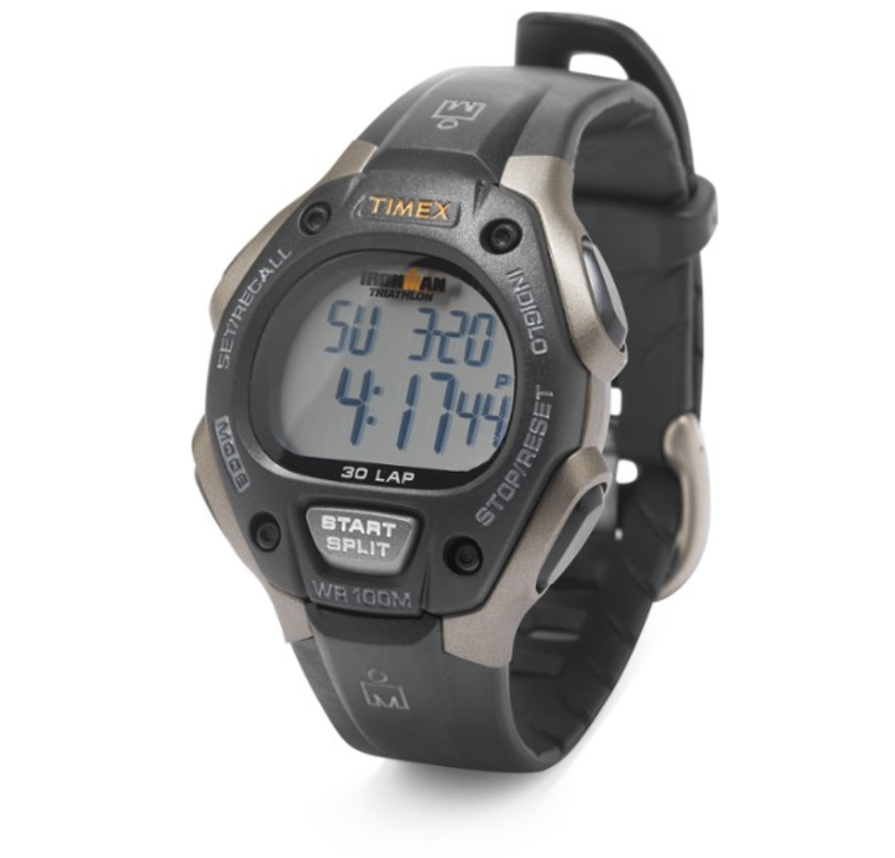
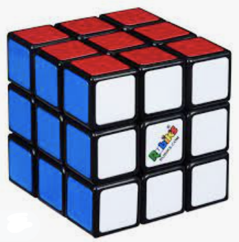
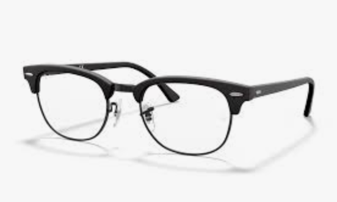
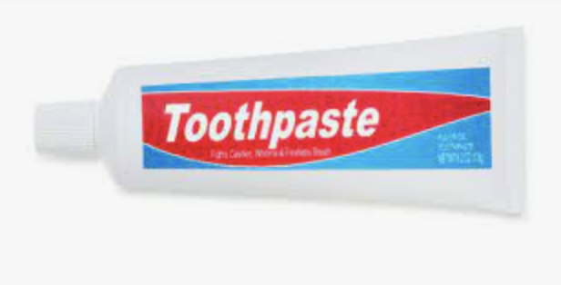
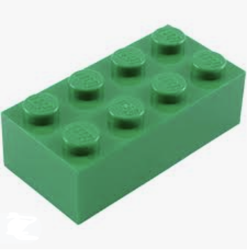
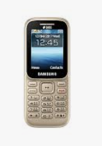
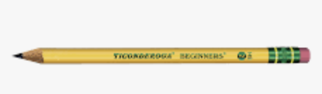

Round One: Digital Watch
MobileNet - correct
Google lens - double points for identifying exact model of the watch!
Round Two: Rubik's Cube
MobileNet - incorrect it identified it as a… carton?
Google lens - correct
Round Three: Glasses
MobileNet - couldn't identify. it kept switching between stethoscope, vacuum cleaner, and shower curtain.
Google lens - correct
Round Four: Toothpaste
MobileNet - determined it was either a barbershop or a movie theater
Google lens - double points for identifying exact brand and price!
Round Five: LEGO™ Toy
MobileNet - identified it as a matchstick
Google lens - correct
Round Six: Button Phone
MobileNet - correct
Google lens - double points for identifying exact model of phone
Round Seven: Pencil
MobileNet - identified as a whistle
Google lens - double points for identifying exact brand of pencil
I have tested seven images and here's the score:
Google Lens - 11 points
MobileNet - 2 points
My conclusion is that Google lens is better for identifying images.